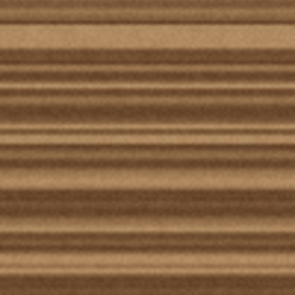
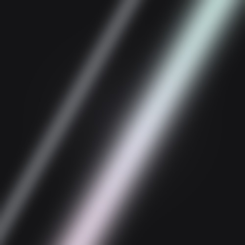
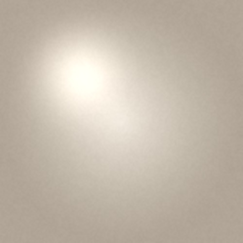
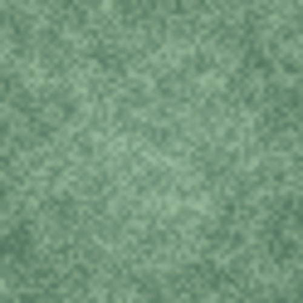
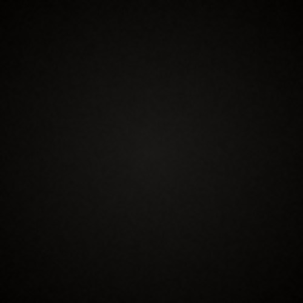
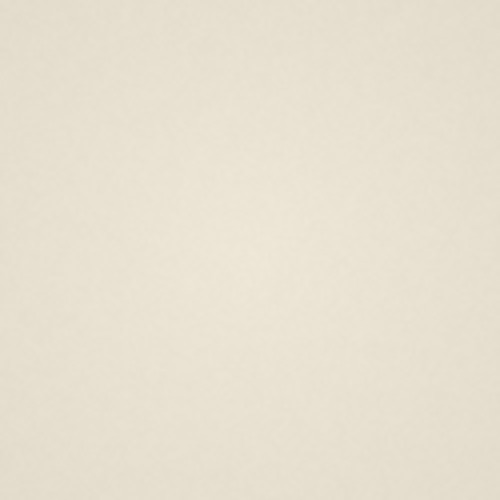
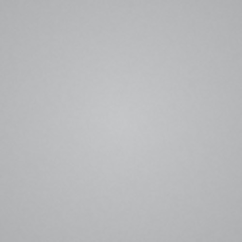
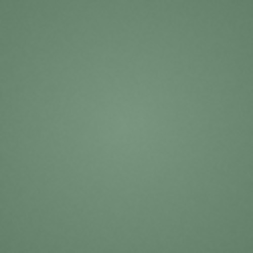

수수Soo Soo
스마트 글래스는 여전히 '미래 기술'이라는 이미지에 머물러 있습니다. Soo Soo는 한국 전통 공예의 절제된 미학을 현대적으로 재해석해, AI로 가상의 안경과 모델을 디자인한 아트 디렉션 프로젝트입니다. 기술을 설명하는 대신, 갖고 싶은 패션 아이템으로 다시 인식시키는 경험을 제안했습니다. 메타(Meta)의 열렬한 팬이자 한국 크리에이티브로서, 이 둘을 하나로 엮어낼 수 있었다는 점에서 이 프로젝트에 개인적인 애정이 큽니다. Smart glasses are still stuck with the image of "future technology." Soo Soo is an art direction project that reinterprets the restrained aesthetic of traditional Korean craft for today, designing a fictional pair of glasses and a model entirely with AI. Rather than explaining the technology, it proposes an experience that makes people see it as a fashion item they'd actually want. As a big fan of Meta and a Korean creative myself, this project holds a special place for me in that it brought the two together.
영감Inspiration
K-Beauty, 고정관념을 넘어서면 비로소 보이는 본질
K-Beauty, the essence beyond the stereotype
'Asian Beauty'는 종종 획일적인 이미지로 소비되지만, 진짜 미학은 그 안을 들여다볼 때 보인다.
Asian beauty is often reduced to one uniform image, but its real aesthetic only shows once you look past it.
제품이 아니라 인식을 다시 디자인하다
Redesign the perception, not the product
AI 글래스 역시 '미래 기술'로만 읽히는 오해 속에서, 한국 미의 절제와 균형을 스타일로 재해석했다.
AI glasses face the same misreading as "future tech," so this project reinterprets them as a style built on Korean restraint and balance.
디자인 컨셉Design Concept
절제는 가장 고급스러운 장식이다.
Restraint is the most luxurious ornament.
한국의 전통 미는 비워내는 방식으로 완성되며, Soo Soo는 이 절제의 미학을 균형과 여백으로 표현했다.
Traditional Korean beauty is completed by leaving things out, and Soo Soo expresses that restraint through balance and negative space.
이름 '수수'는 꾸미지 않아도 아름다운 상태를 뜻하며, 제품과 모델 모두 이 미학을 공유한다.
The name Soo Soo means beauty that needs no adornment, an aesthetic shared by both the product and the model.
디자인 팔레트Design Palette
한국 전통 장신구의 재료에서 시작하다.
The materials of traditional Korean ornament.
한국 공예는 색보다 재료의 결과 빛을 중시하며, 네 가지 전통 소재에서 팔레트가 출발했다.
Korean craft values a material's own texture and light over color, and the palette starts from four traditional materials.
재료Materials

목리(木理)Mongni (木理) · Wood Grain
일정하지 않은 나뭇결의 자연스러운 균형이 프레임 구조와 실루엣에 반영되었습니다.
Wood grain's natural irregularity, a balance no artificial pattern can match, is reflected in the frame's structure and silhouette.

나전(螺鈿)Najeon (螺鈿) · Mother-of-pearl
빛에 따라 은은하게 변하는 나전의 반사광이 메탈 디테일과 렌즈 광택의 기준이 되었습니다.
Mother-of-pearl's quiet, light-shifting sheen set the standard for the metal details and the lens's subtle gloss.

백자(白磁) & 진주(眞珠)Baekja (白磁) & Jinju (眞珠) · Porcelain & Pearl
백자의 절제된 흰색과 진주의 은은한 광택이 만나 아이보리 톤과 피부의 소프트한 하이라이트 기준이 되었습니다.
Porcelain's restrained white and pearl's quiet sheen together set the standard for the ivory tone and soft skin highlights.

옥(玉)Ok (玉) · Jade
품격과 절제를 상징하는 옥의 은은한 초록은 프로젝트 전반의 포인트 컬러가 되었습니다.
Jade's quiet green, a symbol of dignity and restraint, became the project's accent color.
컬러 시스템Color System

흑칠(黑漆) · BlackHeukchil (黑漆) · Black
흑칠(黑漆)에서 가져온 깊은 검정. 형태를 가장 선명하게 드러내는 기본색입니다.
A deep black drawn from black lacquer (heukchil). The base color that renders form most clearly.

백자(白磁) · 아이보리Baekja (白磁) · Ivory
백자의 담백함과 진주의 은은한 광택을 담은 절제된 화이트입니다.
A restrained white carrying the plainness of porcelain and the quiet sheen of pearl.

은장도(銀粧刀) · SilverEunjangdo (銀粧刀) · Silver
은장도와 금속 세공에서 착안한 차가운 광택. 기술적인 이미지를 가장 세련되게 표현하는 색입니다.
A cool sheen drawn from ornamental silver knives (eunjangdo) and metalwork. The color that renders the technical image most elegantly.

옥색(玉色) · Jade GreenOksaek (玉色) · Jade Green
옥이 가진 차분한 녹색. 화려한 포인트가 아닌, 오래 바라볼수록 깊어지는 한국적인 색입니다.
The calm green of jade. Not a flashy accent, but a distinctly Korean color that deepens the longer you look at it.
AI 프로덕션 워크플로우AI Production Workflow
제품과 모델 모두 RunPod 위 ComfyUI 파이프라인으로 제작해 톤을 통일했다.
Both the product and the model were built through a ComfyUI pipeline on RunPod to keep a unified tone.
Midjourney
무드보드 · 레퍼런스 생성Mood board & reference generation
ComfyUI
요소 합성 · 파이프라인 구축Element compositing & pipeline
RunPod
GPU 백엔드GPU backend
구조를 먼저 공부한 안경은 결과가 안정됐고, 모델은 여러 결과를 조합해 완성도를 높였다.
The glasses stabilized once structure came first, and the model combined the best of several outputs.
안경Glasses
다섯 가지 요소는 프레임의 각 부분에 순서대로 자리잡고 있습니다.
The five elements sit in sequence across different parts of the frame.
- 프레임 전체, 조선 목가구에서 볼 수 있는 나뭇결을 현대 소재 위에 재해석했습니다.
이미지 · 디자인 확대컷이미지 · 소재 레퍼런스
- 옆면 장식, 나전칠기의 흰 광택과 은색 곡선을 단순화해서 표현했습니다.
이미지 · 디자인 확대컷이미지 · 소재 레퍼런스
- 카메라 주변, 은세공 프레임처럼 감싸 전자부품이 아니라 보석 세팅처럼 보이게 했습니다.
이미지 · 디자인 확대컷이미지 · 소재 레퍼런스
- 힌지, 진주를 배치해 구조와 장식이 하나로 이어지도록 했습니다.
이미지 · 디자인 확대컷이미지 · 소재 레퍼런스
- 안경다리 끝, 비취나 청자에서 보이는 낮은 채도의 옥색으로 마무리했습니다.
이미지 · 디자인 확대컷이미지 · 소재 레퍼런스
- 아래쪽 프레임, 아이보리로 밝아지는 그라데이션을 넣어 한지의 투명함과 백자의 담백함을 떠올리게 했습니다.
이미지 · 디자인 확대컷이미지 · 소재 레퍼런스
- Frame overall, the wood grain found in Joseon-era wooden furniture, reinterpreted onto a modern material.
Image · design close-upImage · material reference
- Side ornament, the white sheen and silver curves of lacquerware inlaid with mother-of-pearl, simplified.
Image · design close-upImage · material reference
- Around the camera, wrapped like a silver setting, so it reads as a jewel mount rather than an electronic part.
Image · design close-upImage · material reference
- The hinge, a pearl placed so structure and decoration become one continuous form.
Image · design close-upImage · material reference
- Temple tips, finished in the same low-saturation jade green found in jade stone and celadon.
Image · design close-upImage · material reference
- Lower frame, a gradient lightening into ivory, recalling the translucence of hanji paper and the plainness of white porcelain.
Image · design close-upImage · material reference
문양은 프레임 전체를 덮지 않고 충분히 비워둬, 가까이서야 발견되는 절제된 아름다움을 남겼습니다.
The pattern never covers the whole frame, it leaves enough negative space that the restraint only reveals itself up close.
모델Model
모델 컨셉
Model Concept
절제된 아름다움의 얼굴
The face of restrained beauty
수수는 가상 모델이 아니라, 한국의 미를 인물로 옮긴 또 하나의 디자인이다.
Soo Soo isn't a virtual model, but Korean beauty translated into a figure, another piece of design.
일곱 가지 요소가 얼굴과 스타일링 전반에 걸쳐 이 미학을 구현합니다.
Seven elements carry this aesthetic across her face and styling.
-
Symmetry as Balance
완벽한 대칭은 안정감을 만든다.
중앙에서 정확히 나뉜 헤어와 정돈된 브레이드는 좌우 균형이 만드는 고요한 질서를 표현합니다.이미지 · 디자인 확대컷이미지 · 레퍼런스 -
Porcelain Skin
백자의 미학을 닮은 피부.
조선 백자처럼 불필요한 요소를 덜어낸 깨끗한 피부는 빛을 은은하게 머금어 다른 디테일을 돋보이게 합니다.이미지 · 디자인 확대컷이미지 · 레퍼런스 -
Brows that Disappear
덜어낼수록 본질이 선명해진다.
얼굴의 장식을 줄여 시선이 자연스럽게 안경의 구조와 실루엣으로 향하도록 설계했습니다.이미지 · 디자인 확대컷이미지 · 레퍼런스 -
Muted Jade Eyes
색은 말하지 않고 남는다.
짙은 아이 메이크업 대신 옥빛을 닮은 은은한 그린으로, 절제된 한 가지 색만으로 존재감을 만들었습니다.이미지 · 디자인 확대컷이미지 · 레퍼런스 -
Silk Around the Neck
선을 감싸는 우아함.
목을 감싸는 실크는 한복의 깃이 만드는 단정한 선에서 영감을 받아, 부드럽고 고요한 실루엣을 완성합니다.이미지 · 디자인 확대컷이미지 · 레퍼런스 -
Jewelry in Motion
움직일 때 완성되는 장식.
전통 장신구처럼, 진주와 은빛 체인은 움직임에 따라 미세한 반짝임을 만들며 절제된 럭셔리를 표현합니다.이미지 · 디자인 확대컷이미지 · 레퍼런스 -
A Face Without Time
국적보다 미학이 먼저 보이는 얼굴.
금발과 창백한 피부는 문화적 선입견을 지운 중립적 캔버스 위에 한국의 미학만을 남기기 위한 장치입니다. '한국인처럼 보이는 얼굴'이 아닌, 한국의 미가 어떻게 보일 수 있는지를 탐구했습니다.이미지 · 디자인 확대컷이미지 · 레퍼런스
-
Symmetry as Balance
Perfect symmetry creates a sense of stability.
Hair parted precisely down the center and neatly arranged braids express the quiet order of left-right balance.Image · design close-upImage · reference -
Porcelain Skin
Skin that echoes the aesthetic of porcelain.
A clean surface stripped of anything unnecessary, like Joseon white porcelain, holds light softly and lets every other detail stand out.Image · design close-upImage · reference -
Brows that Disappear
The essence gets sharper the more you take away.
Reducing the face's own decoration was a deliberate choice, so the eye naturally moves to the structure and silhouette of the glasses instead.Image · design close-upImage · reference -
Muted Jade Eyes
Color stays quiet, but it stays.
Instead of heavy eye makeup, a soft jade green builds presence from a single restrained color, echoing jade's role as an accent in traditional ornament.Image · design close-upImage · reference -
Silk Around the Neck
Elegance that wraps a line.
The silk around the neck draws its inspiration from the clean line of a hanbok collar, completing a soft, quiet silhouette.Image · design close-upImage · reference -
Jewelry in Motion
An ornament completed by movement.
Like traditional Korean ornaments, the pearl and silver chain catch a faint shimmer in motion, expressing a restrained kind of luxury.Image · design close-upImage · reference -
A Face Without Time
A face where the aesthetic reads before the nationality.
The blonde hair and pale skin create a neutral canvas stripped of cultural assumptions, leaving only the Korean aesthetic behind. This wasn't about a face that "looks Korean," but an exploration of how Korean beauty itself could appear.Image · design close-upImage · reference
Application
Editorial
회고Reflection
- 머릿속의 키 메시지를 시각적으로 어떻게 옮기고, 그걸 어떤 논리적 구조로 풀어낼지는 큐레이션과 구조화 사이 어딘가에 있는 감각이라는 걸 배웠습니다.
- AI로 제품을 만들 때도 모든 걸 AI에 맡기는 게 아니라, 요소 하나하나를 직접 공부하고 무엇을 적용할지 판단하는 나만의 '의견'이 반드시 필요하고, 그러려면 선행 연구가 먼저라는 것도요.
- 일관성을 위해 프롬프트와 작업 과정을 하나의 시스템처럼 구조화해야 했는데, 이 과정이 예전에 개발할 때 하던 작업과 비슷해서 재미있었습니다.
- Translating a key message visually, and deciding what logical structure to unfold it in, turned out to be a sense that lives somewhere between curation and structuring.
- Even when making a product with AI, you can't hand everything over to it. You need your own opinion about which elements to study and apply, and that starts with doing the research first.
- Keeping things consistent meant structuring the prompts and the whole process like a system, work that felt a lot like the development work I used to do.